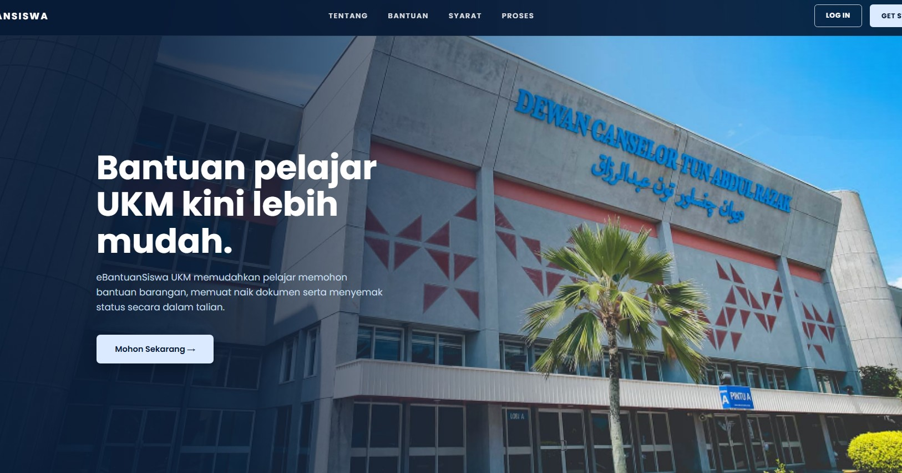
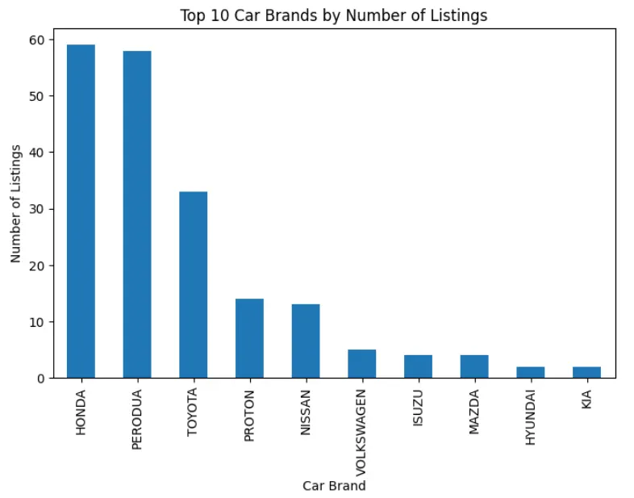
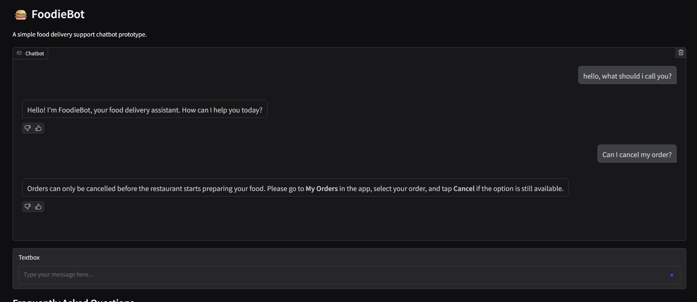
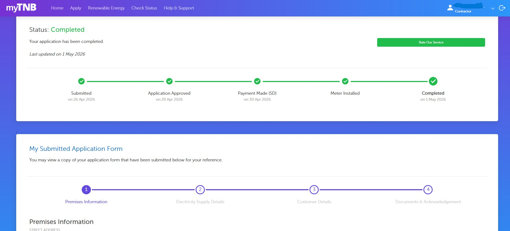
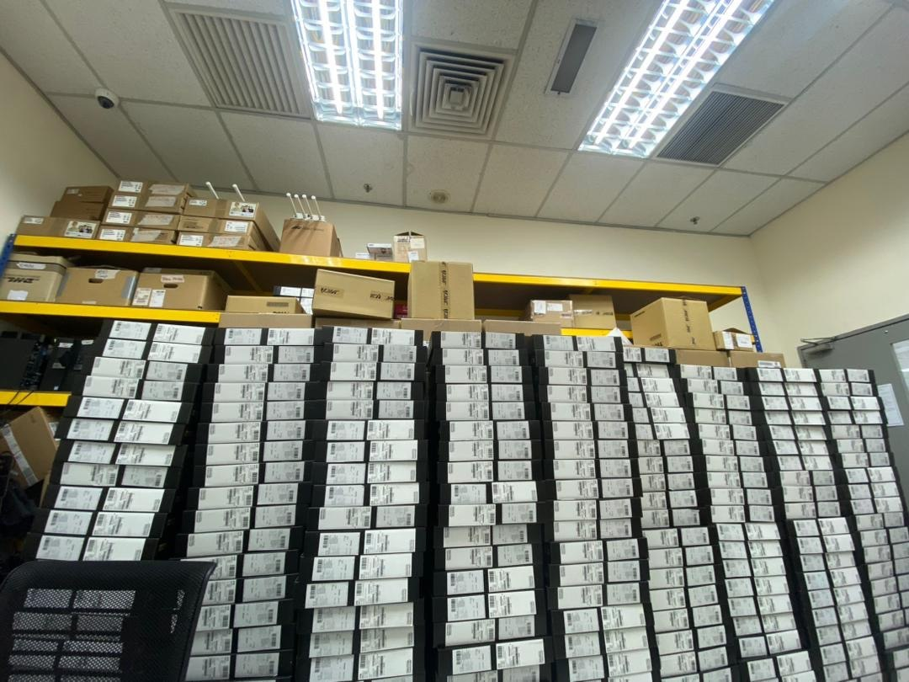

Building practical solutions through data and technology.
Focused on creating structured, efficient, and user-friendly systems that solve real operational challenges.
About Me
Nurhazirah Binti Abdul Rahman
Assalamualaikum and hi. I am currently pursuing a Bachelor of Computer Science in Data Science at Universiti Kebangsaan Malaysia.
I would describe myself as someone who was initially quite shy, but over time I have become more confident in communicating, working in teams, and building good relationships with others.
I enjoy learning new tools and technologies related to data, systems, and web development. Over time, I have become more confident in communication, teamwork, and adapting to different environments.
Besides academics and technology, I also enjoy helping others, volunteering, and playing badminton during my free time.
Featured Project
eBantuan Siswa UKM
Full-Stack Web Application · Final Year Project
eBantuan Siswa UKM is a web-based student aid management system designed to make the application, review, donation, and distribution process more organized, transparent, and easier to manage.
Student, donor, and admin user roles
Online application form and document upload
Application status tracking
Dashboard, inventory, donation, and reporting management

Selected interface previews from the eBantuan Siswa UKM platform.
More Projects
Data Analysis & AI Projects
Additional projects focused on data collection, cleaning, analysis, and simple AI-based interaction.

Carsome ETL Analysis
Collected and cleaned used car listing data from Carsome, then performed simple exploratory analysis to understand car brand, age, pricing, and listing patterns.
- Scraped 200+ used car listings
- Cleaned and transformed raw data
- Created car age feature for analysis
- Visualized listing trends by brand and year

FoodieBot Chatbot
A simple chatbot project developed to simulate food-related conversations and provide restaurant or menu recommendations based on user input.
- Built chatbot response flow using Python
- Processed user input and intent matching
- Tested simple conversational interaction
- Deployed and tested using Google Colab
Freelance Experience
Electrical Application Support
Freelance documentation and process support for TNB-related electrical applications, including application tracking, document preparation, and approval monitoring.

TNB-related Application Process
Freelance Technical & Documentation Support
Assisted in handling electrical application workflows, documentation preparation, client coordination, and application status monitoring for residential and commercial electricity supply requests.
- Supported single-phase and three-phase application workflows
- Prepared and checked required forms and supporting documents
- Monitored approval progress until installation completion
- Organized application records for tracking and reference
Work Experience
IT Operations & Asset Deployment
Real working experience involving enterprise IT asset replacement, deployment coordination, inventory tracking, and operational support at Honda Malaysia.

Honda Malaysia Sdn. Bhd.
IT Security & Operations Technician
Supported large-scale IT asset replacement operations involving deployment coordination, inventory handling, documentation, and operational workflow management across multiple locations.
IT assets managed and tracked company-wide
Departments involved in on-site verification
Enterprise IT replacement project support
- Managed deployment tracking and documentation workflow
- Coordinated with vendors and internal departments
- Conducted on-site IT asset verification and assessment
- Supported enterprise device replacement operations
Contact
Let’s Connect
Email: nhazirah483@gmail.com
Phone: +60 182532215